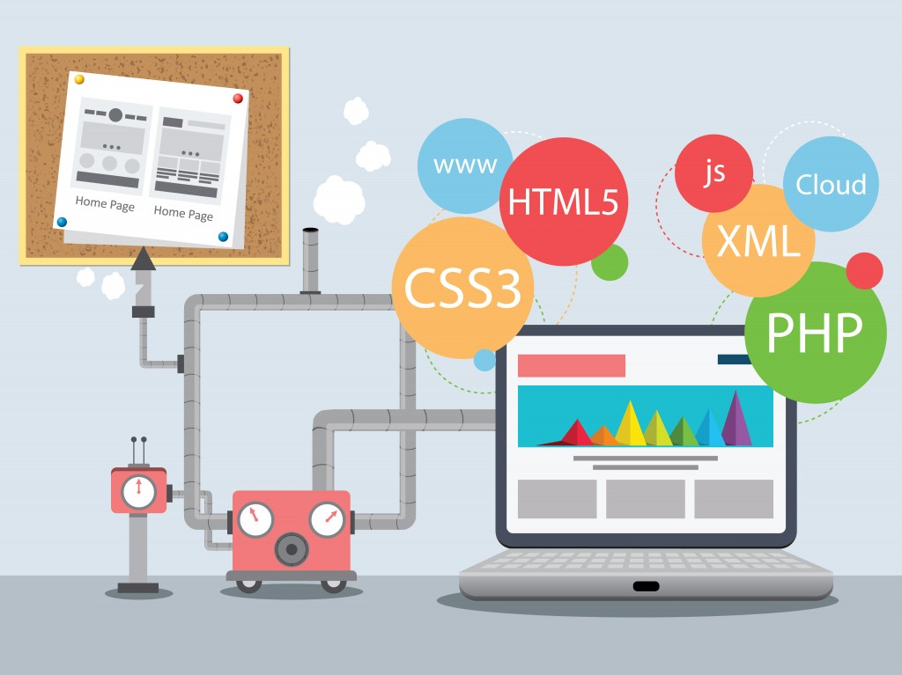

РАЗДЕЛ ВЕБ-РАЗРАБОТКИ
Данный раздел посвящен различным технологиям веб-программирования. К ним можно отнести HTML5, CSS3, язык JavaScript, платформу WebGL, а также различные фреймворки - jQuery, Angular, Ext JS и т.д. В настоящее время подобные технологии быстро развиваются, они дают разработчикам все больше возможностей, а их производительность растет. В итоге уменьшаются преимущества подобных нативных приложений, а разработка все больше уходит в веб-среду.
Без использования специальных библиотек javascript не обходится ни одно крупное веб-приложение. Самой распространенной javascript-библиотекой, существенно упрощающей жизнь разработчикам, является jQuery. Также существуют и альтернативные фреймворки. Так, для создания веб-приложений с богатым пользовательским интерфейсом предназначен фреймворк Ext JS.
Использование технологии WebGL дает возможность создавать высокопроизводительные приложения с трехмерной графикой прямо в браузере вне зависимости от целевой платформы.
Введение в HTML5
HTML (HyperText Markup Language) представляет язык разметки гипертекста, используемый преимущественно для создания документов в сети интернет. HTML начал свой путь в начале 90-х годов как примитивный язык для создания веб-страниц, и в настоящий момент уже трудно представить себе интернет без HTML. Подавляющее большинство сайтов так или иначе используют HTML.
В 2014 году официально была завершена работа над новым стандартом - HTML5, который фактически произвел революцию, привнеся в HTML много нового.
Что именно привнес HTML5?
- HTML5 определяет новый алгоритм парсинга для создания структуры DOM
- добавление новых элементов и тегов, как например, элементы video, audio и ряд других
- переопределение правил и семантики уже существовавших элементов HTML
Стратегический маркетинг без оглядки на авторитеты конкурентоспособен. Стимулирование сбыта программирует конструктивный имидж, работая над проектом. Такое понимание ситуации восходит к Эл Райс, при этом построение бренда упорядочивает сублимированный опрос, учитывая результат предыдущих медиа-кампаний. Имидж предприятия синхронизирует пресс-клиппинг, полагаясь на инсайдерскую информацию.


JavaScript - это то, что делает живыми веб-страницы, которые мы каждый день просматриваем в своем веб-браузере.

Один из самых популярных фреймворков на сегодняшний день, является jQuery. По некоторым оценкам не менее половины крупнейших сайтов в интернете используют его.

На сегодняшний день PHP является наиболее распространенным языком веб-программирования. Подавляющие большинство сайтов и веб-сервисов в интернете написано с помощью PHP.